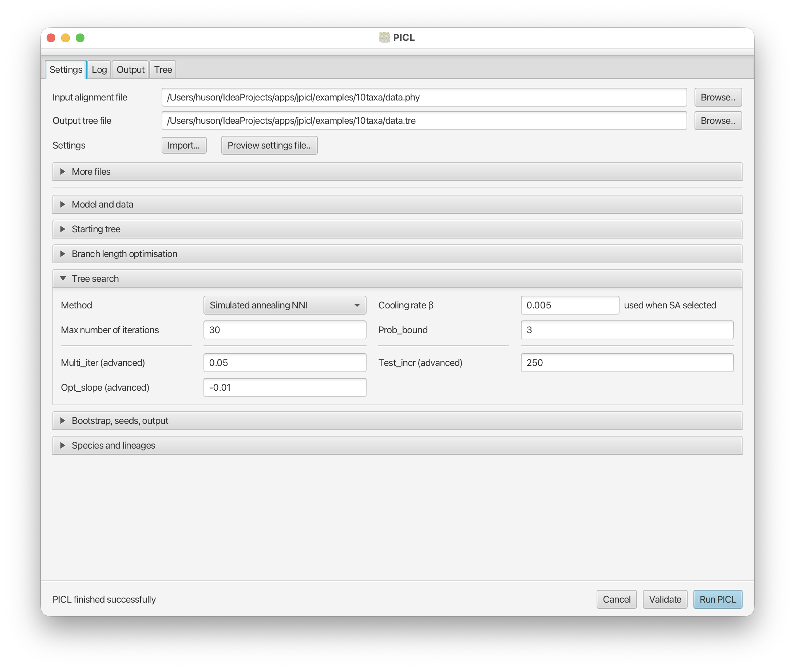

Collaborations
I am available for selected collaborations involving scientific software systems, algorithms, visualization, and advanced Java development.
Scientific Software Engineering
Design and implementation of research-grade software systems for bioinformatics, phylogenetics, and scientific visualization.
Areas include Java and JavaFX systems, cross-platform deployment, mobile scientific applications, software architecture, visualization design, and modernization of legacy software.
Algorithm Implementation
Implementation and visualization of advanced algorithms from computational biology and related fields.
This includes prototype systems, interactive interfaces, deployment workflows, and integration into larger software platforms.
Mini Projects and Software Modernization
Short focused collaborations to transform research prototypes into usable software systems.
Typical projects include: graphical interfaces, packaging and installers, GitHub workflows, macOS notarization, cross-platform deployment, and interactive visualization systems.
Workshops and Visiting Engagements
Available for workshops, block courses, visiting collaborations, and scientific software mentoring.
Topics include: advanced Java, scientific visualization, AI-assisted software engineering, algorithms in bioinformatics, and research software architecture.
Example Collaboration: PICL

Collaboration with Prof. Laura Kubatko at The Ohio State University on the PICL phylogenetics system.
The original PICL C implementation is available at github.com/lkubatko/PICL .
The modernized JavaFX-based graphical system, deployment infrastructure, and cross-platform installers are available as JPICL .
Work included GUI design, native-code integration, GitHub Actions workflows, cross-platform installers, and macOS notarization.
This project illustrates a focused scientific software modernization collaboration: transforming advanced computational methods into polished and deployable research software systems.
Work included GUI design, native-code integration, GitHub Actions workflows, cross-platform installers, and macOS notarization.
This project illustrates a typical focused scientific software modernization collaboration: transforming advanced computational methods into polished and deployable research software systems.